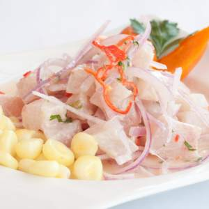

RECETA PERUANA
Ceviche de Pescado

ingredientes
para 4 personas
- 1kg Pescado
- medio kilo de limon
- 3 dientes de ajos
- medio kilo de cebolla
- cilantro, apio, jenjibre
- pimienta
- aji limo
preparacion
- cortar el pescado en cuadritos de 3cm y dejarlo en la heladera
- exprimir los limones
- licuar los tallos de apio y cilantro, ajo, jenjibre y el aji limo
- sacar el pescado y mezclar en un recipiente hondo
- agregar lo que licuamos anteriormente,el jugo de limon, sal y pimieta al gusto
- servimos en un plato acompañando con batata y canchita (maiz frito) y listo, a comer !!